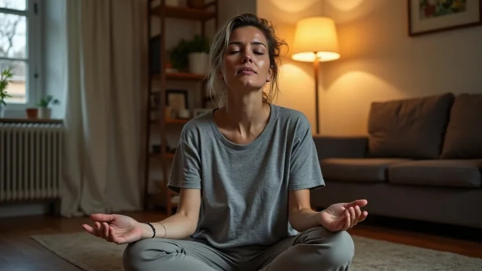

How to build a recovery routine after high stress days is a question worth taking seriously. When your body and mind have been running on high alert, simply going to bed and hoping for the best rarely feels like enough. You wake up still tense, still scattered, still carrying yesterday.
A stress recovery routine is not about doing more. It is about giving your system the right conditions to settle. Some days that means slowing down deliberately. Other days it means noticing where you are holding tension and doing one small thing to release it.
This article walks you through five practical checks you can run after a hard day. None of them require special equipment or an hour of free time. They are built for real life, including the evenings when you are already exhausted.
Building a recovery routine after high stress days means checking in with your body, sleep, food, movement, and nervous system before the next day begins. A consistent stress recovery routine helps you recover physically and mentally after a stressful day without needing a dramatic overhaul of your schedule.
What Is a Stress Recovery Routine and Why Does It Matter?
A stress recovery routine is a small set of intentional actions you repeat after a high-stress day to help your body and mind return to a calmer baseline. It is not a rigid plan. It is a reliable pattern you can lean on when the day has been hard.
Check 1: Name what kind of day it actually was. Before you can recover, it helps to briefly acknowledge what drained you. Was it physical, emotional, mental, or all three? Taking thirty seconds to name it can help you choose the right recovery action rather than defaulting to scrolling or snacking out of habit.
Stress affects the body in real ways. The NHS notes that persistent stress can affect sleep, digestion, and energy levels over time. Recovery is the process of giving your system room to come back down.
Without any recovery practice, high-stress days tend to stack. You carry the tension from Tuesday into Wednesday, and by Friday your reserves are noticeably lower.
A routine does not need to be long to be useful. Even a ten to fifteen minute sequence done consistently can begin to signal to your body that the hard part of the day is over.
- It creates a practical boundary between work and personal time
- It makes room for relaxing activities before bed
- It builds a small but reliable anchor in an otherwise unpredictable week
- It lets you write down tomorrow's first task without continuing to work tonight
If you are curious about how your broader daily structure affects recovery, the article on building a routine that works through a demanding week covers the scheduling side in more detail.
The goal is not perfection. The goal is a few reliable actions that feel manageable even on the hardest evenings.

What Are the Signs You Need a Stress Recovery Routine?
Many people do not realise they need a stress recovery routine until their body makes the need impossible to ignore. Waking up tired, snapping at people you care about, or struggling to concentrate are all signals worth paying attention to.
Check 2: Scan your body for tension before you sit down for the evening. Tight shoulders or a clenched jaw can accompany stress, but these signs do not establish the cause. Notice what feels uncomfortable and choose a gentle activity that suits you.
Common signs that a recovery routine could help include:
- Difficulty switching off mentally after work ends
- Feeling physically restless but also exhausted at the same time
- Appetite changes, either not hungry at all or eating past fullness
- Sleep that feels shallow or broken even when you go to bed at a reasonable time
- Irritability that feels out of proportion to what is happening around you
- A sense of dreading the next day before the current one has ended
These signs do not automatically mean something is seriously wrong. They are useful feedback. They can have several causes, including stress, sleep problems, or illness. Note when they occur rather than assuming that an evening routine will resolve them.
If these patterns are persistent and significantly affecting your daily life, consider speaking with a qualified clinician. This article covers self-help strategies, not medical care.
It is also worth noticing what you are already doing after a hard day. Some habits speed recovery. Others, like staying in work mode until midnight or scrolling through stressful content, tend to delay it.
Recognising your current pattern is not about judgment. It is about having accurate information so you can make a small shift.
Why Does Recovery After a Stressful Day Feel So Hard?
Recovery after a stressful day can feel counterintuitively difficult because the stress response is designed to keep you alert and ready. It does not switch off automatically the moment the source of stress disappears.
Check 3: Ask yourself whether you have given your body a clear signal that the threat has passed. This might sound abstract, but it is practical. Physical cues like a short walk, slow breathing, or changing out of work clothes can all help shift the signal your nervous system is receiving.
The body's stress response involves a cascade of physical changes. Your heart rate, breathing, and muscle tension all increase during stress. After the stressor passes, these systems need time and the right conditions to settle back down.
One reason recovery feels hard is that modern stressors, such as a difficult email chain or a tense meeting, do not have a clear physical endpoint. The situation ends, but the physical activation lingers.
Another reason is habit. If you have spent years going straight from stress into more demands, your body may not have a learned pattern for coming down. Recovery then feels unfamiliar rather than restorative.
- Ruminating over the day keeps the stress response active
- Stimulating screen content close to bedtime can make it harder for the body to settle
- If you missed a meal, make time to eat; do not assume that evening anxiety means a blood sugar problem
- Keep a regular sleep schedule where practical; persistent sleep problems deserve medical advice
The NHS recommends regular physical activity and good sleep habits as part of managing stress. These are not novel ideas, but they do need to be applied consistently to make a difference.
Understanding why recovery is hard makes the solution less mysterious. You are not broken if you find it difficult. You may just need a reliable sequence to follow.
For more on why persistent tiredness can build up over time, the piece on how sleep debt affects daily performance is worth reading alongside this one.
How Can a Stress Recovery Routine Be Built After a Hard Day?
Building a stress recovery routine is less about adding more to your evening and more about sequencing a few deliberate actions so they become automatic over time. The CDC recommends regular sleep and wake times to support sleep. Treat the sequence below as an optional planning aid, not a tested stress treatment.
Check 4: Choose one anchor action for your recovery routine and do it at the same point each evening. An anchor action is a single reliable behaviour that signals the transition from demand to rest. It might be making a warm drink, doing five minutes of stretching, or stepping outside briefly.
Here is a simple sequence to consider building from:
- Step 1 - Transition: Create a clear signal that the work part of the day is over. Change clothes, step outside for a few minutes, or make a warm drink. Something brief and repeatable works best.
- Step 2 - Move gently: A short walk or light stretching can help release physical tension that built up during the day. This does not need to be an intense workout. Gentle movement after a stressful day may help your body settle.
- Step 3 - Eat something steady: If you skipped meals or ate erratically, a small evening meal with protein and fibre can help stabilise your energy levels before bed. The NHS provides practical guidance on balanced eating habits that support overall wellbeing.
- Step 4 - Reduce stimulation: Dimming lights, stepping away from work notifications, and choosing calmer content in the hour before sleep can all support an easier wind-down.
- Step 5 - Prepare for tomorrow briefly: Writing down two or three things for the next day takes no more than two minutes but can reduce the mental loop of trying to remember things while you are trying to sleep.
You do not need to do all five steps every night. One or two done consistently will do more than a full routine attempted once and abandoned.
The NIDDK highlights that small, sustainable habit changes are more likely to stick than large overnight overhauls. Build gradually.
If you want to think about how to pair this with what you do in the mornings, the guide on a stress-resistant morning routine can help you see the full day as a recovery cycle.
How Can a Stress Recovery Routine Be Maintained Daily Without Burning Out on the Routine Itself?
One of the quiet traps in building any new habit is that the routine itself becomes another source of pressure. If you miss it, you feel like you have failed. If it takes too long, you resent it. A good stress recovery routine should feel like relief, not obligation.
Check 5: Build a minimum version of your routine for the hardest evenings. On a normal evening, your routine might be fifteen minutes. On an exhausting evening, your minimum version might be three minutes of slow breathing and a glass of water. Both count. Neither is a failure.
Here is an editorial tool you can use to review your routine every two weeks:
- Did I actually do any part of the routine this week?
- Which step felt most natural and which felt like a chore?
- Is there one step I can simplify or shorten?
- Did my sleep or mood feel any different on the nights I used the routine versus the nights I skipped it?
- What is one small adjustment I want to try next week?
These questions help you refine the routine based on real experience rather than ideal conditions. That makes it far more likely to last.
Consistency matters more than completeness. The NIDDK notes that building new habits works best when the change is gradual and fits into your existing life rather than replacing it entirely.
Sleep is a central part of daily recovery. The CDC outlines that adults generally need sufficient consistent sleep to support physical and mental functioning. If your routine is not helping you reach sleep, that is a signal to review what is getting in the way.
If stress and poor sleep are a recurring pattern in your life, it may be worth speaking with a doctor or qualified mental health professional. Self-help strategies are a valuable starting point, but they are not a substitute for professional support when it is needed.
For more ideas on building habits that feel manageable over the long term, the guide on creating sustainable healthy habits is a good next step.
The daily self-care piece on matching care to a real need is also worth bookmarking for evenings when you are not sure where to start.
An Illustrative Scenario
Illustrative scenario: Picture someone in a high-demand role who comes home most evenings feeling wired but exhausted. After experimenting, they settle on a short walk, a glass of water, and writing two tasks for the next morning. On nights they follow this sequence, they find it somewhat easier to settle before sleep.
This is not a clinical outcome and is not intended as one. It illustrates how a small repeated action can become a useful signal. The routine did not solve every problem, but it gave a clear moment where the day could end and something quieter could begin.
Related Reading
Frequently Asked Questions
Put this into practice today.
Our free ebook and habit tracker app help you apply what you just read. No cost, no signup required.
Where to Go From Here
Recovery after a hard day is not a luxury. It is maintenance. Your body and mind need consistent opportunities to settle, and a simple routine gives you a structure to do that without adding more pressure to your evening.
You do not need to overhaul your whole life to start. Pick one check from this article and try it tonight. It might be naming what kind of day it was, or doing a brief body scan, or writing two things down before bed. One small action repeated is worth far more than a perfect plan that never happens.
Over time, a reliable stress recovery routine becomes something you look forward to rather than something you squeeze in. Start small, stay consistent, and give yourself credit for showing up even on the hardest evenings.
Sources & References
These references provide background and further reading. Practical exercises are editorial suggestions, not clinically validated interventions. This article does not replace professional advice.
- NHS: 10 stress busters. General guidance on activity, social support, and addressing causes of stress.
- ▪Sleep guidance: regular bedtimes, sufficient sleep, and advice on persistent sleep problems. - Centers for Disease Control and Prevention (CDC)
- ▪Small, sustainable habit changes are more likely to stick than large overnight overhauls. - National Institute of Diabetes and Digestive and Kidney Diseases (NIDDK)
- ▪Balanced eating habits, including steady meals with protein and fibre, can support overall wellbeing. - NHS - Eat Well